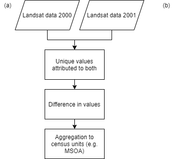

Chapter 4 Results
4.1 Visualisation and Analysis of Tech Cluster
4.1.1 Distribution
4.1.2 Descriptive Analysis
4.2 Visualisation and Analysis of Dynamics
4.3 Figure & Table
This section is going to focus including figures and creating tables

Figure 4.1: Summary of methdological procedure for (a)…. and (b)….
knitr::include_graphics(here::here('general_images','example_flow.png'))
out.width="100pt", fig.cap="Summary of methdological procedure for (a).... and (b)....".
However, if you do show the code with echo=TRUE then you can’t specify the out.width.
library(tidyverse)
library(knitr)
library(kableExtra)
library(readxl)
library(fs)
library(here)
#read in data
read_excel(here("tables", "abbreviations.xlsx"))%>%
arrange(Term) %>% # i.e. alphabetical order by Term
# booktab = T gives us a pretty APA-ish table
knitr::kable(booktabs = TRUE)%>%
kable_styling(position = "center")%>%
# any specifc row changes you want
row_spec(.,
row=0,
bold = TRUE)| Term | Abbreviation |
|---|---|
| Digital Elevation Model | DEM |
| Digital Surface Model | DSM |
| Digital Terrain Model | DTM |
You do loads of things with kabble including adding small visulisations within the table - consult the documentation for more info.
If in doubt, keep it simple
other useful arguments for tables:
column_spec(2, width = "9cm")= set column widthkable(timeline,longtable = T....= allow the table to go over multiple pages
For example…
read_excel(here("tables", "policy.xlsx"))%>%
mutate_all(~ replace_na(.x, "")) %>%
# booktab = T gives us a pretty APA-ish table
knitr::kable(longtable = T, booktabs = T,
caption = 'Relevant influential international, metropolitan and local UHI and urban expansion policies, strategies and assessments (with publication date) referred to in this paper. * Denotes documents that lack specific UHI related policy but recognise the value of maintaining vegetation.')%>%
kable_styling(position = "center", full_width = T)%>%
# any specifc row changes you want
row_spec(.,
row=c(0,1,8, 18),
bold = TRUE)%>%
column_spec(1, width = "14cm")%>%
row_spec(c(1, 8, 18), hline_after = T)| Policy |
|---|
| International |
| United Nations The World Cities in 2016 (2016) |
| United Nations New Urban Agenda (2017) |
| ARUP City Resilience Framework (2015) |
| United Nations International Strategy for Disaster Reduction Sendai Framework (2015) |
| Universal Sustainable Development Goals (2015) |
| Biological Diversity, Cities and Biodiversity Outlook (2012) |
| Metropolitan |
| AECOM Australia, Economic Assessment of the Urban Heat Island Effect, Melbourne (2012) |
| The Spatial Development Strategy For Greater London (2017) |
| Western Australia Planning Commission, Perth and Peel (3.5?) million (2015) |
| City of Johannesburg Metropolitan Municipality, Spatial Development Framework 2040 (2016) |
| Western Australian Planning Commission, Directions 2031 and beyond: metropolitan planning beyond the horizon (2010) |
| Western Australian Planning Commission, Development Control Policy 2.3 Public Open Space in Residential Areas (2002) |
| Plan For The Metropolitan Region Perth And Fremantle (1955) |
| Singapore Government, Open Space Provision (2011) |
| Western Australian Planning Commission, Metropolitan Region Scheme Text (2006) |
| Local |
| USA Environmental Protection Agency, Reducing Urban Heat Islands Compendium of Strategies Trees and Vegetation (2008) |
| USA Environmental Protection Agency, Reducing Urban Heat Islands Compendium of Strategies Urban Heat Island Basics (2008) |
| USA Environmental Protection Agency, Reducing Urban Heat Islands, Compendium of Strategies Heat Island Reduction Activities (2008) |
| City of Stirling, Stirling Urban Forest Community Consultation (2017) |
| City of Fremantle, One Planet Fremantle Strategy 2014/2015 - 2019/2020, 1–12 (2014) |
| Metropolitan Redevelopment Authority, Subiaco Redevelopment Scheme (2013) |
| Metropolitan Redevelopment Authority, Subiaco Redevelopment Scheme 2 (2017) |
| City of Bayswater, Urban Forest Strategy (2017) |
| City of Perth, Urban Forest Plan 2016-2036 (2006) |
| City of Fremantle, City of Fremantle Urban Forest Plan (2017) |
| City of Fremantle, Annual Budget 2016-17 (2016) |
| City of Wanneroo, Street Tree Policy (2016)* |
| City of Subiaco, Plant Pathogen Management Plan(2015)* |